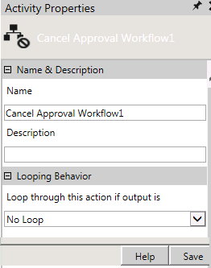
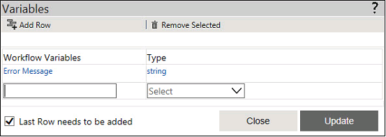

No
Activity Description
Cancel Approval Workflow activity is responsible for the canceling an operation (Save As, Delete, Disable, Enable, Publish) and terminating the workflow instance, if while setting the rights for a specific security group, user has selected the option as "Requires Approval" or "Requires Approval with Prompt" for that operation.
If the Request for approval is rejected or is terminated due to some reason, Cancel Approval Workflow activity is responsible for rolling back the operation.
Scenario
Consider a scenario, where while setting the security rights for Administrator, Can Publish Item right has been set as Requires Approval with the selected workflow as Security Approval Workflow.
Security Approval workflow ensures that Publish operation completes successfully only after approval from the concerned person. But if the request is rejected by the approver, then Security Approval workflow uses Cancel Approval Workflow activity internally to terminate the request.
For more details, see Security Approval Workflow.
Activity Properties:
The Cancel Approval Workflow activity has to be configured by specifying appropriate values for the different properties in the Action Properties area. The Activity Properties can be accessed by clicking on the Activity Properties tool in the Tool Bar or by selecting the appropriate option from the right click menu for the Approval activity. The Activity Properties are organized under the following groups of related properties. The properties under each group are described in this topic.

Name & Description
The properties in the Name & Description group have been described below. You can use these properties to specify the name and description for the activity.
Name - This property can be used to specify a name for the activity.
Property Type: Optional (This property needs to be set only if necessary.)
Description - This property specifies a brief description to be displayed for the activity.
Property Type: Optional (This property needs to be set only if necessary.)
Looping Behavior
The property in the Looping Behavior group has been described below. You can use this property to specify the looping behavior of the activity.
Loop through this action if output is - This property is used to specify the condition for looping the activity by selecting an activity output from the drop down.
Property Type: Optional (This property needs to be set only if necessary.)
Note: The user needs to create a variable with the name "Error Message" in the Start activity of the workflow which is using the Cancel Approval Workflow activity. This variable is used to capture any errors which have might occur during the process of cancelation of the various operations (Save As, Delete, Disable, Enable, Publish).
